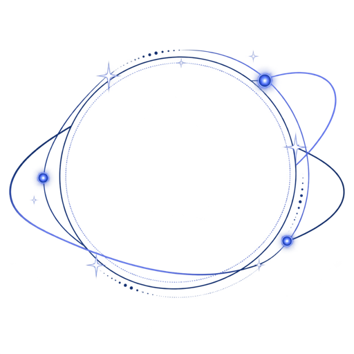

REAL PRODUCT UI · SIX RECORDINGS
See Memova
in motion.
These are the original product recordings from the previous Demo. Click any recording to play the product UI and its corresponding founder guide together.
Watch the first recording
Founder guide01 · COLLECT & UNDERSTAND
Knowledge Base Setup
Start with an empty workspace, choose a user-owned vault, and let Memova create the connected structure that agents can read.
- Start from an empty workspace
Open Knowledge Base setup before any projects or meeting packets exist.
- Keep the archive local and portable
Meeting knowledge stays searchable while its Markdown archive lives in the user's iCloud Drive.
- Choose a user-owned iCloud vault
Create or reconnect a vault, then approve the parent folder Memova may write to.
- Inspect the agent-readable tree
Memova creates inbox, projects, outputs, schemas, wiki, and root instruction files.
02 · NOTE
From context to action
Capture what happened, let Memova prepare the complete Note, then run a reviewable next step from the same context.
- Record context as it happens
Add voice, notes, ideas, and images without interrupting the meeting.
- Turn the meeting into a complete Note
Memova prepares a shareable HTML preview, Suggested Actions, Summary, and Transcript.
- Run Suggested Actions in one tap
Create an interactive webpage, draft an email, or set a calendar event from the same context.
03 · BOOK
Project Book Generation
Create several visual Pages from one connected Project, then keep the results beside the notes, files, and evidence that shaped them.
- Choose the Pages to create
Select multiple output types from the same Project context.
- Guide each output with a focused brief
Add a clear instruction for every Page while Memova keeps the source material connected.
- Review generated Pages inside the Book
Each result returns to the living Book alongside its notes, library items, and files.
- Open the Page and share with control
Preview the HTML, then choose a QR code, link, editable copy, or permissioned access.
05 · CONTEXT RETURN
Ask Memova & Why This
Ask inside the active Project, inspect what changed, trace the answer back to evidence, and carry the approved preference forward.
- Ask inside the active Project
Notes, library items, files, and prior work are already in context.
- Describe the change in plain language
Ask for a new cover and a shorter title in the user's established style.
- Receive a reviewable update
Memova explains what changed instead of silently overwriting the Page.
- Compare before and after
Inspect the revision beside the previous version before keeping it.
- Ask why this version fits
Inspect the reasoning behind the result, not only the result itself.
- Trace the answer to its sources
The rationale cites Project context, imagery, public evidence, and prior writing.
- Open the cited evidence
Follow the citation and return without losing the conversation.
- Carry the choice forward
Confirm the preference so Personal Knowledge can reuse it later.